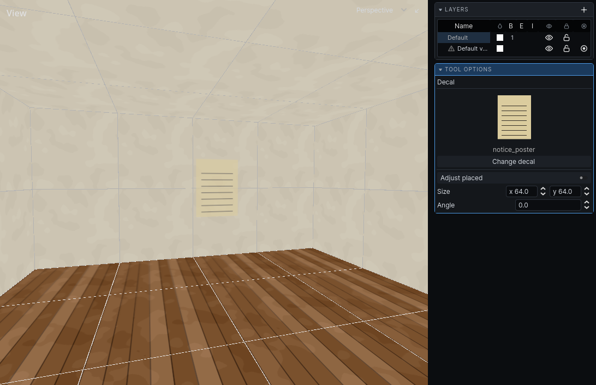

Decals
A decal is a picture laid flat on a surface: a stain, a sign, a crack. What decals do in the bake is in Lighting.
Place decals
- Choose Tools → Decal. The Decal panel opens at the bottom right.
- Click Change decal and pick one from the decal browser.
- Set Size and Angle in the panel.
- Point at a surface in the 3D view. The decal shows where it will land, flat on the surface.
- Click to place it. Click again for more.
- Press
Escto leave the tool.
Each placement is one undo step.

Move placed decals
- In the decal tool, press
Tabor click Adjust placed. - Click a decal to pick it up.
- Drag it across any surface. It stays flat on whatever it is over.
- Let go to keep it there. Change its Size and Angle in the panel.
- Press
Tabto go back to placing.
Each drag and each change is one undo step.
Decal browser
Tools → Decal Browser… opens the same browser as for textures, over your game's decals. It remembers its own zoom. See Texturing.
Decals are decal entities, so you can also select them and edit them in the inspector.